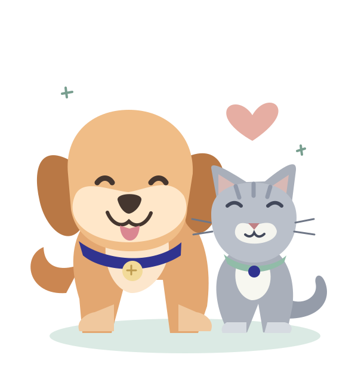

Um novo amigo.
Uma nova história.
Cada cadastro é o começo de uma relação. Tutores e animais recebem um espaço só deles no sistema.
Uma clínica de bairro com um carinho do tamanho da sua família. Porque cada pet merece ser cuidado de um jeito único.


A Patas & Cia nasce da ideia de que cuidar é conhecer. Conhecer o nome, a história e quem está sempre por perto. Aqui, tutores e animais fazem parte da mesma família.
Este projeto transforma o caderno de cadastros em uma plataforma simples, para que nenhuma informação importante fique para trás.
Conheça o nosso jeito de cuidarPequenos gestos, grandes vínculos.
Do primeiro cadastro à rotina da clínica.
Cada cadastro é o começo de uma relação. Tutores e animais recebem um espaço só deles no sistema.

Contatos organizados e animais vinculados ao seu responsável. Mais clareza para a rotina de quem cuida.

Busque, consulte e atualize os cadastros em poucos cliques, com mensagens claras em cada etapa.
Clínica fictícia para a disciplina N695. As imagens são ilustrativas; não representam integrantes do projeto. Esta versão gerencia cadastros, sem agendamentos ou prontuários.
Encontre tutores, cadastre novos animais e mantenha tudo conectado em um só lugar. Um sistema simples para uma rotina mais leve.
Entrar na gestãoAlgumas respostas para ajudar você a conhecer o sistema.
Acesse o sistema, abra a página Tutores e clique em “Cadastrar tutor”. Depois, abra os animais desse tutor para cadastrar cada pet com o vínculo correto.
Sim. Um tutor pode ter vários animais, mas cada animal deve estar vinculado a exatamente um tutor responsável.
Não. Para preservar o relacionamento dos cadastros, o sistema bloqueia essa exclusão. Primeiro transfira os animais para outro tutor ou exclua os respectivos cadastros.
Não nesta versão. O escopo do trabalho é criar, listar, atualizar e excluir tutores e animais, com validações e armazenamento em banco de dados.